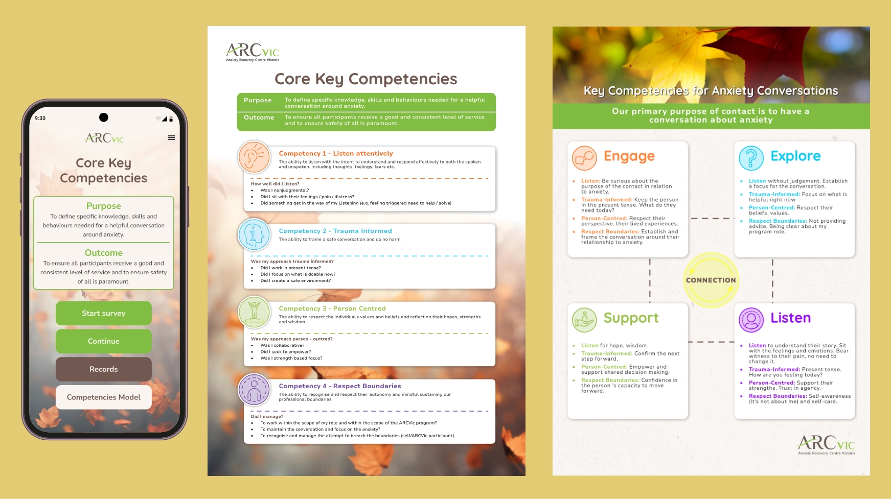
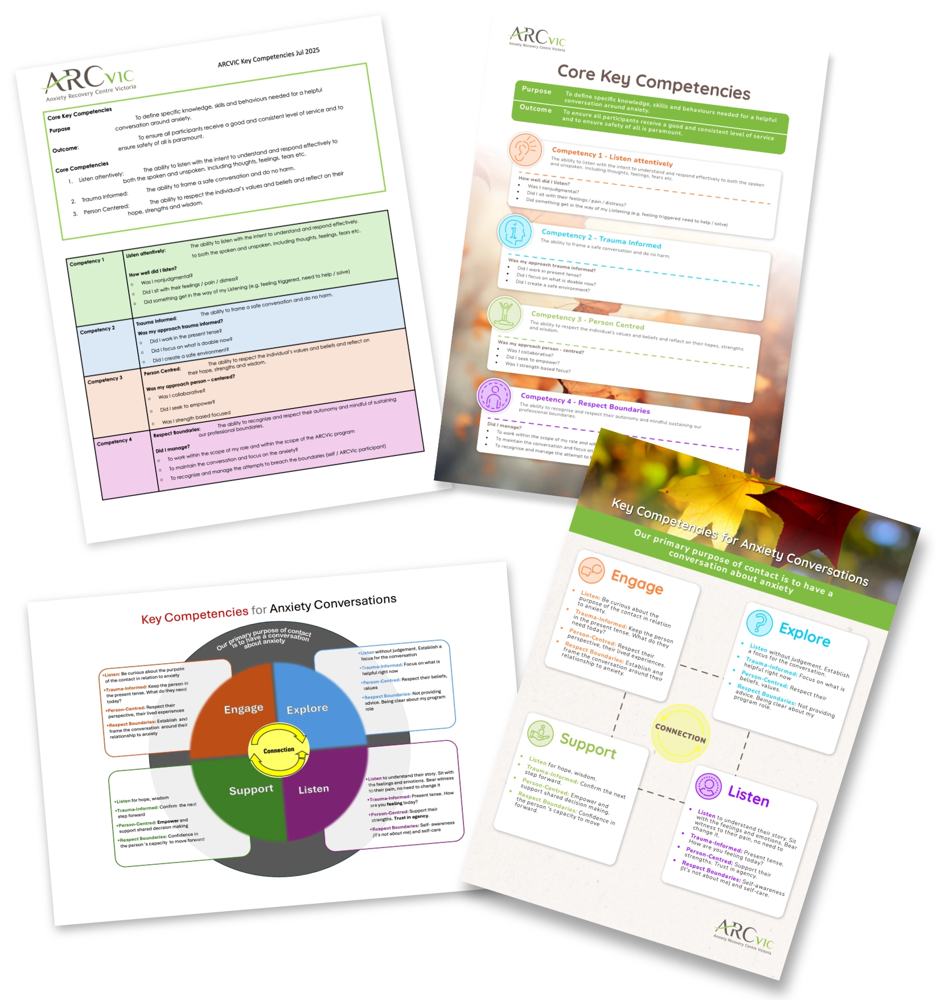
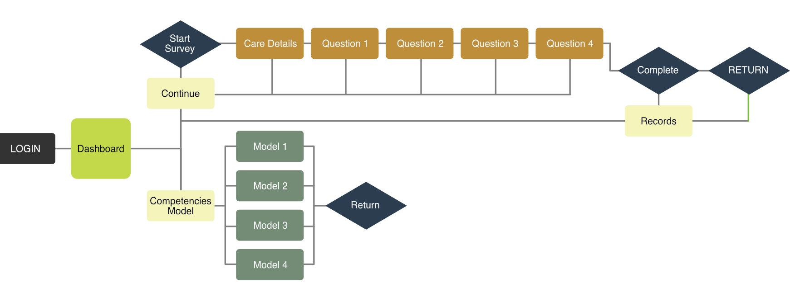
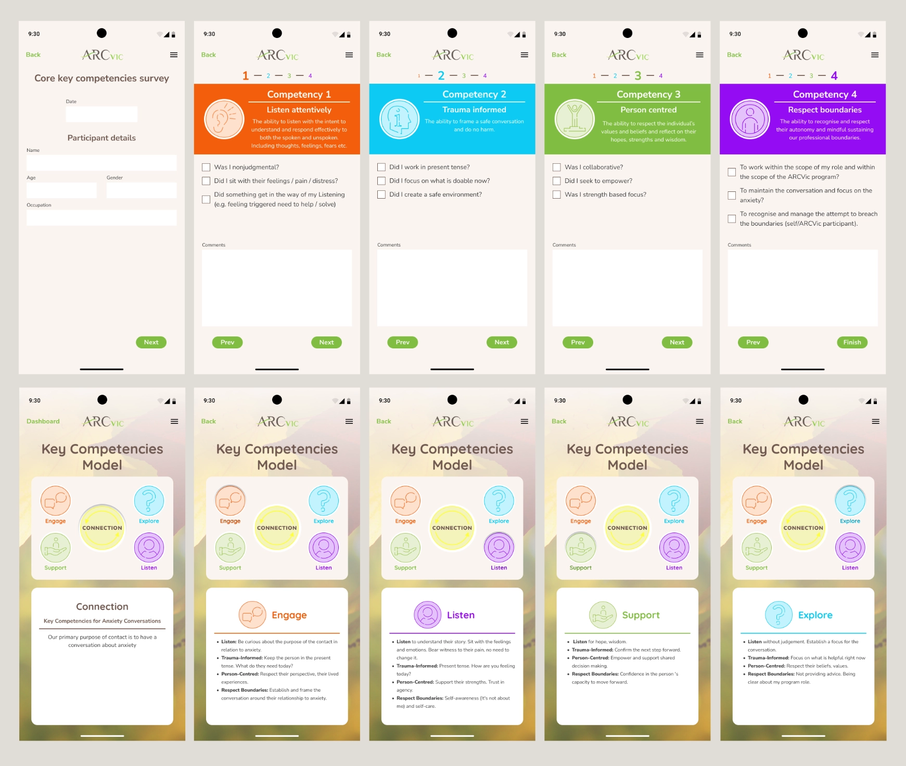
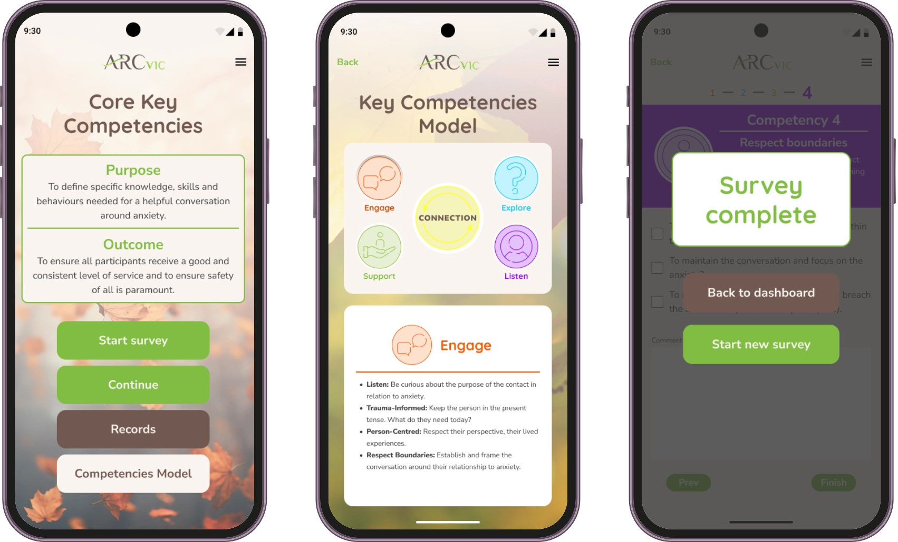

arcVIC Reference Guide
UI/UX Designer & Systems Architect
Digitizing public health workflows: From static paper to interactive utility. Social workers in high pressure environments cannot afford cognitive overload. For arcVIC, I transformed dense paper compliance guidelines into an empathetic, component driven mobile application. By restructuring clinical data into a clear visual hierarchy and engineering a custom vector iconography, I eliminated friction for field workers logging patient interactions.

Restructuring Clinical Constraints
Field social workers require immediate access to "Core Key Competenci3I first audited and typeset the raw data into legible hierarchy, establishing strict compliance parameters before beginning any digital prototyping.


Designing for Instant Recognition
To prevent cognitive overload in high stress environments, I engineered a custom vector icon system in Adobe Illustrator representing the four core competencies.
Utilizing uniform vector stroke weights and a strict colour mapping strategy, these assets serve as psychological anchors. This structural approach ensures instant cross interface recognition, keeping critical parameters highly accessible.
Mapping the Architecture of Compliance
Social workers rarely sit at desk, they operate in vehicles and community centers. To ensure zero data drop off, I mapped a rigid system logic tree. The resulting architecture splits user intents into two clean pathways stemming from a central dashboard. A linear interactive survey wizard and a modular reference portal.

Themed Interaction Loops
Engage, Explore, Support, and Listen. Rather than treating these behavioral pillars as passive text, I translated each phase into a distinct programmatic component. By coordinating a dynamic theme engine, the interface physically reflects the calm, deliberate pacing required for anxiety conversations.

Translating Print Logic into App Components
Transitioning into Figma, I reimagined the workflow as a fully interactive mobile application. To translate my print design layout rules into dynamic screens, I built a rigid component library utilizing global colour styles, modular progress tickers, and explicit field input states. The resulting core survey wizard allows workers to check off operational criteria dynamically, cutting down post session administrative burden.

Interactive Ecosystem & Feedback
The finalized interface establishes a clear starting point by splitting user intents into actionable primary buttons. When launching the Key Competencies Model, users interact with a responsive, colour coded layout. Upon task completion, the validation flow triggers a clear, structural state confirmation modal securely handling data submission states.

Multi Channel Compliance Reporting
A core requirement was bridging the gap between field workers and office administration. I engineered a dual output framework that formats a single dataset into two distinct mediums.
While social workers view instant insights on an optimized mobile summary, administrative managers receive a print ready A4 document. I designed this export template with grid margins and typographic hierarchies.